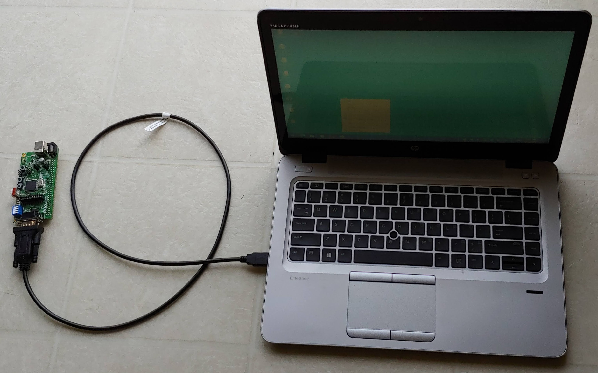
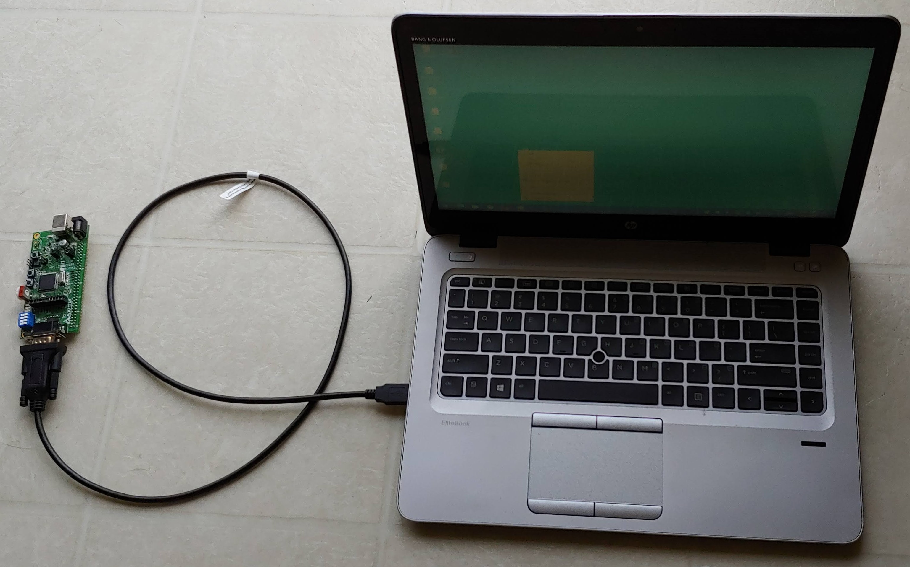

CMPEN 472, The Pennsylvania State University
Homework 5
Due: Feb. 26, 2021 11:30pm
Objective
To learn how to use serial port for cummunications,
how to write subroutines, how to construct LOOPs, and
how to do user interaction.
 

Note on board names
CSM12C128 board is also called HCS12C128 board or APS12C128 board.
It contains the MC9S12C128 microcontroller chip. In the previous years,
the class used smaller CSM12C32 boards with MC9S12C32 microcontroller chip.
The main differences are the on-chip RAM size and flash memory size.
The RAM on MC9S12C128 chip starts at $3000 and the RAM on MC9S12C32 chip
starts at $3800. Otherwise, both chips are practically the same.
This Semester, we are using ONLY the CodeWarrior Debugger/Simulator to
show the hardware and program workings. For the grading of all homework
during this Semester, we will be testing your program on the CodeWarrior
simulator only.
Instruction
- Read the HCS12 Microcontroller refference manual,
S12CPUV2 and data sheet Chapters 1, 2, and 13 of
MC9S12C Family.
- Copy the Homework 5 Sample program HW5start.asm file.
Study it, assemble it, debug it, and run it on the CodeWarrior Debugger/Simulator.
- For the CodeWarrior simulation, please follow the
Full Chip Simulator/Debugger - Homework 5 Sample
program guide, with Terminal component.
The sample program is the 'Type writer' - what you type is
what you see (on the Terminal component).
- Write the user friendly, menu driven, and fool-proofed
program, 'main.asm', to turn on/off LEDs and dimm the LED lights
on CSM12C128 board as follows:
Print the following menu on the Hyper Terminal:
L1: Turn on LED1
F1: Turn off LED1
L2: LED 2 goes from 0% light level to 100% light level in 4 seconds
F2: LED 2 goes from 100% light level to 0% light level in 4 seconds
L3: Turn on LED3
F3: Turn off LED3
L4: Turn on LED4
F4: Turn off LED4
QUIT: Quit menu program, run 'Type writer' program.
- When user type in the menu selection followed
by a 'Return/Enter' key, you program controls the LED lights accordingly.
And you will be able to see the effects on the CodeWarrior Debugger/Simulator.
- Your program MUST turn on/off individual LED lights, independent
of the other LED lights. If you turn on LED1 followed by LED3, both
LED1 and LED3 must be on. Please see the sample program for
Homework 2 - for an example of
how to turn on/off LED1 only. And please see the sample program for
Homework 3 - for an example of how to turn on/off LED4 only.
- Print detail guide on the terminal screen so that users
will properly use your program. Once your program is running,
everything must be self explanatory to user at the Terminal component
attached to SCI Port.
(use Hyper Terminal connected on CSM12C128 board if usng the MC9S12C128
microcontroller chip.).
- Also, make your program 'fool-proof', never crash or stop
based on wrong user response.
- Design the program to start at $3100 and data to start at $3000.
- If you are not sure how to start, please take a look at
an example hw5 flow chart. You may build
up your program step by step.
- Be sure to put much comments so that grader and others can
clearly and quickly understand your program. Comments are very
important in assembly language programs.
- You may want to see and check the
Sample Grading Sheet for this homework.
-
Copy your 'main.asm' file to 'cmpen472hw5_YourLastName.asm'.
For example, mine will be 'cmpen472hw5_choi.asm' Do not ZIP your
'cmpen472hw5_YourLastName.asm' file.
-
Turn-in your project source code file through
Penn State CANVAS.
Upload your source code file into the CANVAS Assignment's Homework
submission. Be sure to select CMPEN 472 class and correct Homework
number, and correct file name.
Congratulations on your fifth CMPEN 472 homework completion!
Epilogue:
Flow chart of the Homework 5 program.
Click here.
Aid for the Homework 5.
Click here.